Waves of 8/32/64/128 clients, journals where errors are data, one defended operating point.
Ticket labels arrive in about a second; nothing queues; every reply lands inside the product deadline.
Timeouts, retried and duplicated tickets, a queue that grows faster than it drains — with the same model, same GPU, same code.
| At 128 clients | What it looks like | What it is NOT |
|---|---|---|
| Timeouts | Requests die at their wall budget | Not model refusal |
| Duplicated work | Clients retry; demand doubles silently | Not new users |
| Tail explosion | Most replies fine, 1 in 20 late | Not an average problem |
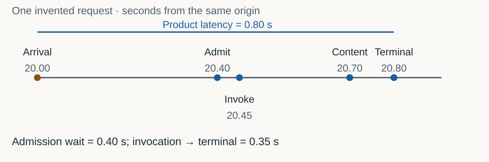
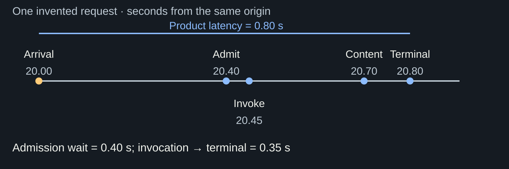
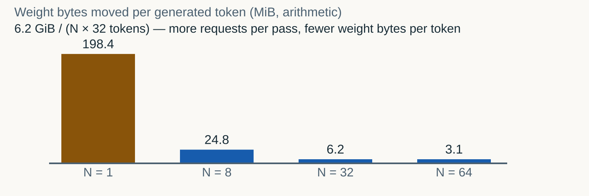
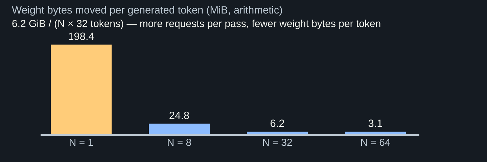
SM occupancy and batch compute: prefill of a new request is a full extra pass — it competes with every resident decode.
36 KiB per retained position per request: grows with context and clients until admission or preemption stops it.
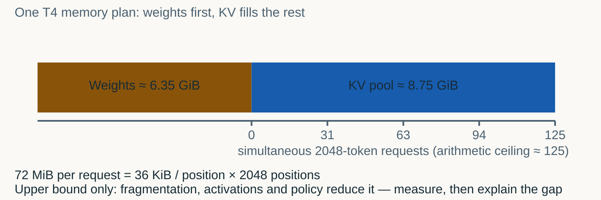
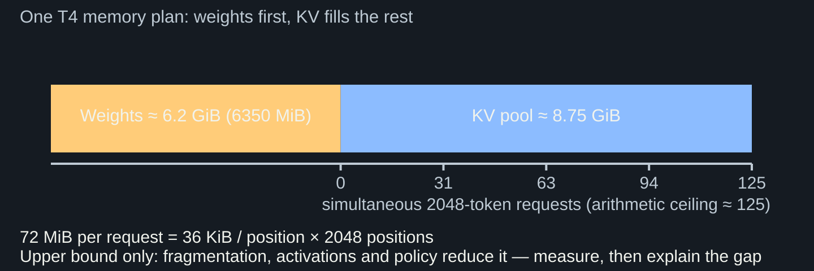
Implement kv_budget_bytes, compute the ceiling, write the knee wave you predict — the file is written before Block 1 runs.
The measured knee will sit below 125. Fragmentation, activations, scheduler policy and prefill interference each take a bite; naming them is the point.
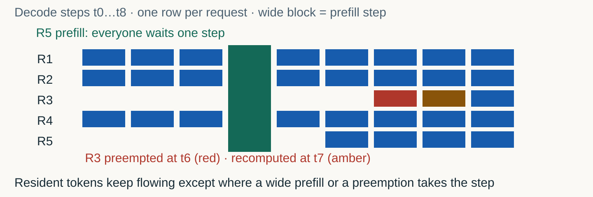
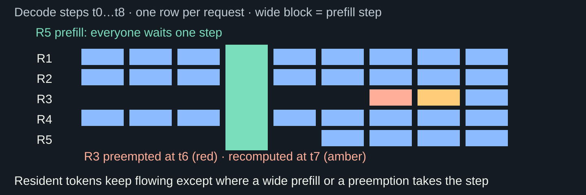
| Event | Immediate effect | Who pays |
|---|---|---|
| Prefill insertion | One decode step lost for the whole batch | Every resident request |
| Admission block | New requests wait outside HTTP | Arriving requests |
| Preemption + recompute | Early tokens recomputed from scratch | The preempted request, twice |
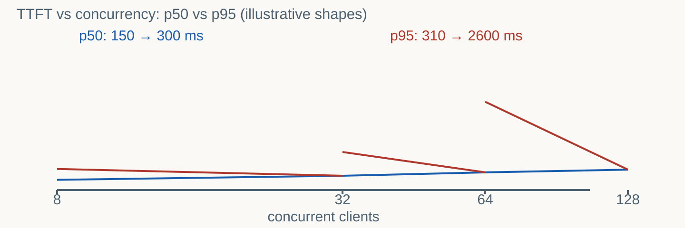
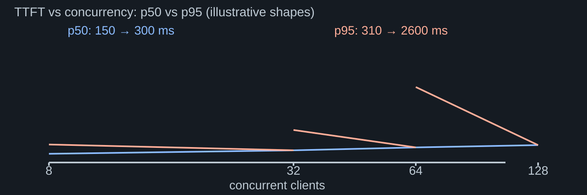
Pinned model and revision, frozen public corpus texts, max tokens, temperature 0, seed, timeout budget, closed-loop driver.
Exactly one factor: concurrency — waves of 8, 32, 64, 128 clients, same per-client quota.
| Outcome | Meaning | Journal field |
|---|---|---|
| completed | HTTP 200 with a full non-empty output | output_tokens above zero |
| timeout | Wall budget exceeded — the request, not the server, gave up | terminal − arrival > budget |
| server error / connection error | 5xx / transport failure | http_status and exception class |
| truncated | Finish reason length: output hit the cap | finish_reason |
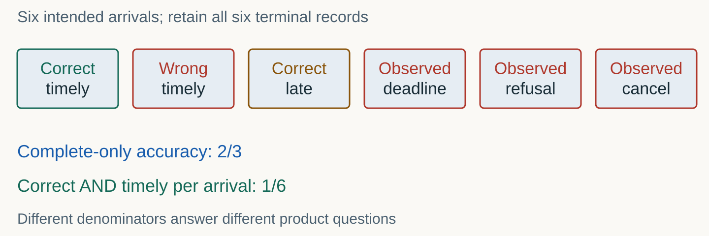
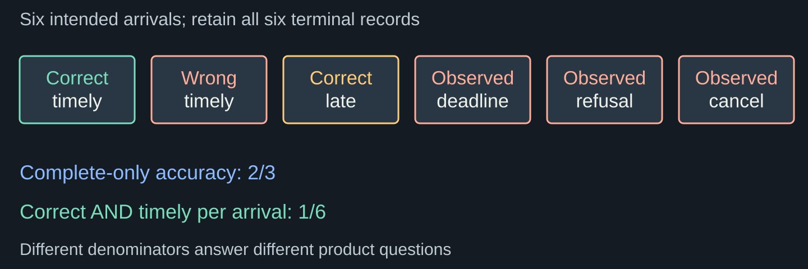
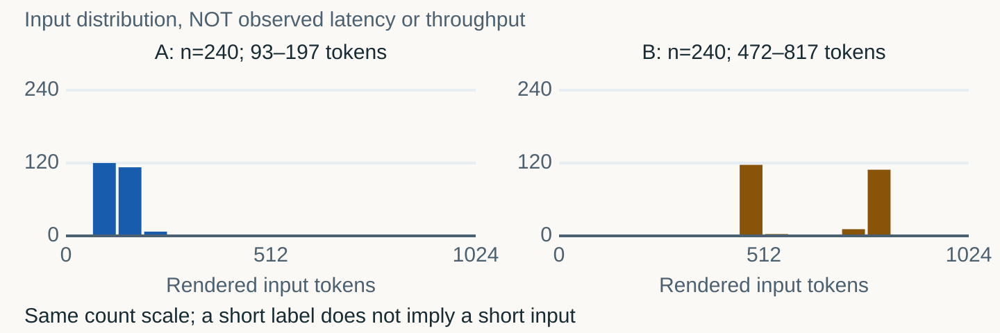
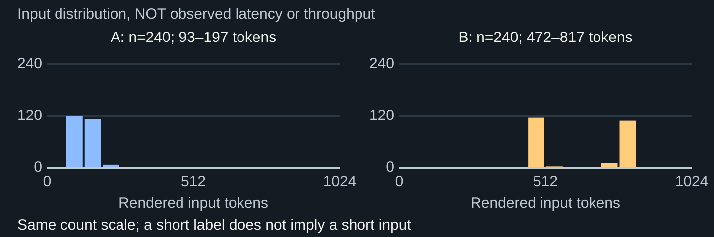
Missing terminals, duplicate IDs, foreign wave tags, impossible timestamps (terminal before arrival).
audit_records classifies every record; a damaged wave is rejected, never silently repaired.
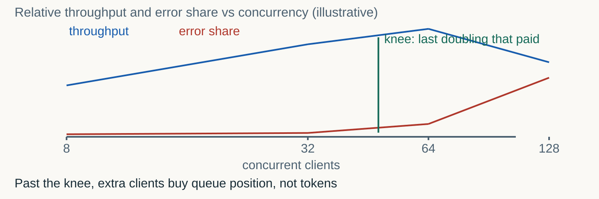
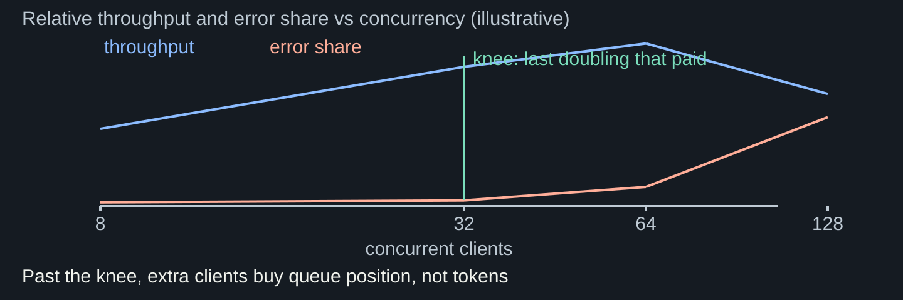
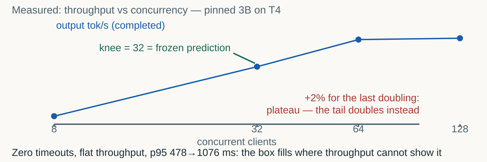
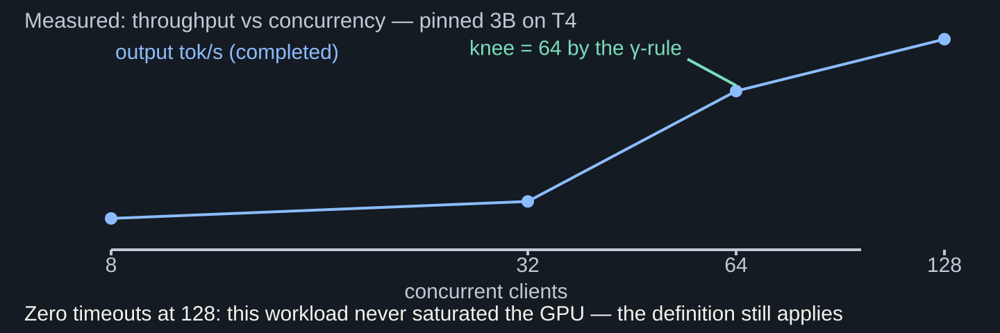
| Trick | What it hides | Lab defence |
|---|---|---|
| Dropped-error denominator | Timeouts vanish; throughput looks flat and happy | Outcome shares per wave, all records |
| Mean-only latency | The p95 tail crosses the SLO invisibly | p50 AND p95 per wave |
| Silent retries | Failed requests come back as successful ones | Driver never retries; one record per attempt |
Ceiling ≈ 125 requests from pure KV arithmetic; the measured knee will be far lower — and each missing request has a name.
Fragmentation and page tails, activation memory, prefill interference, admission policy, per-wave warmup.
| Gate | Round 03 bar | Where the lab meets it |
|---|---|---|
| Speed S (geo-mean 32/64) | 2562.8 tok/s | throughput_by_wave on the real service |
| p95 TTFT at 64 clients | 0.8 s | ttft_percentiles, completed only |
| Quality floors | 0.531 / 0.5355 / 0.4179 | Upstream of the lab: the model must stay correct |
| Error rate per level | ≤ 1% | Outcome shares — errors are data |
| Canaries under load | similarity ≥ 0.8 | The lab never optimizes against canaries |
choose_operating_point: the largest wave whose p95 TTFT and error rate both clear the SLO — with the binding constraint named.
Chosen wave vs your frozen prediction; the resource that bound first, with evidence; one alternative explanation you cannot exclude.
The document classifier B shares the server; A and B are reported separately, never averaged into one bar.
An in-flight cap K ∈ {1, 2, 4, 8, 16} limits B. Dev pair → freeze K with a forecast → one distinct held-out pair.
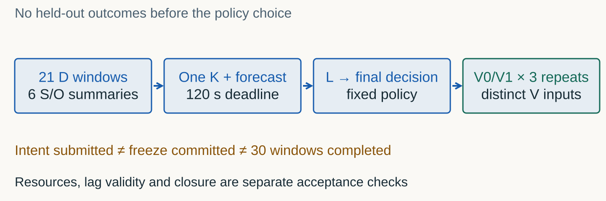
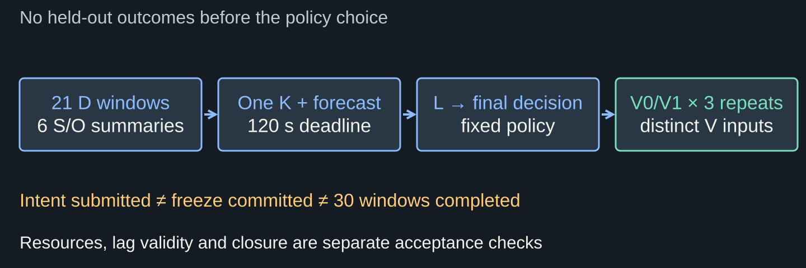
| Step | Action | Frozen artifact |
|---|---|---|
| Development | A-only vs A+B at each K; read both applications | dev table (journals) |
| Decision | One K plus a written A/B forecast | policy.json, hashed at freeze |
| Validation | One held-out pair at the frozen K | interference report |
Journals, audits, curves, knee detection, freeze discipline — the entire analysis pipeline on a declared synthetic queue.
Where this pinned model on a T4 actually saturates; which resource binds; the real interference magnitude.
| Block | Student builds | Frozen evidence |
|---|---|---|
| 0 · Predict | kv_budget_bytes plus a written knee prediction | predictions.json (pre-measurement) |
| 1 · Measure | Runs the supplied wave driver | raw-journal.jsonl (never edited) |
| 2 · Analyse | audit_records, throughput_by_wave, ttft_percentiles, detect_knee | curves + outcome shares |
| 3 · Decide | choose_operating_point and the memo | decision.json |
| Stretch | interference_delta, frozen K, held-out pair | policy.json + report |
Errors are data; the tail speaks before the mean; a frozen prediction beats a good story.